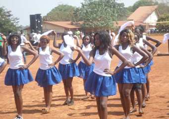

Établissement public — République de Guinée
Former l'excellence,
éclairer l'avenir
L'Université Général Lansana Conté de Sonfonia-Conakry (UGLC-SC) forme depuis 2005 les cadres, chercheurs et citoyens qui construisent la Guinée de demain, au cœur de Conakry.
Une université publique ancrée dans l'exigence académique
Créée par l'Arrêté N°2005/104/MESRS/CAB/DRH du 26 janvier 2005 et baptisée en hommage au Général Lansana Conté, l'UGLC-SC est née de la délocalisation d'une partie de l'Université Gamal Abdel Nasser de Conakry, alors saturée. Depuis, elle forme chaque année des milliers d'étudiants dans quatre facultés, portées par des écoles doctorales et des laboratoires de recherche actifs.

Quatre facultés, une même exigence
Des sciences économiques au droit, en passant par les sciences sociales et les lettres, l’UGLC-SC couvre un large éventail de formations rigoureuses.
FACSEGSciences Économiques & Gestion
Économie, gestion, comptabilité, banque et finance : quatre départements pour former analystes et décideurs.
En savoir plus →FACSJPSciences Juridiques & Politiques
Droit public, droit privé et sciences politiques, héritiers de l’ancienne École Supérieure d’Administration (1963).
En savoir plus →FACSSSciences Sociales
Sociologie, histoire, géographie et philosophie au service de la compréhension des dynamiques guinéennes.
En savoir plus →FACLSLLettres & Sciences du Langage
Lettres modernes, sciences du langage, langue anglaise et langue arabe : quatre départements, une vocation.
En savoir plus →De la licence au doctorat, un continuum LMD
Le système Licence–Master–Doctorat structure l’ensemble de nos formations, de l’entrée après le Baccalauréat jusqu’à la recherche de haut niveau.
Licence
3 ans après le Baccalauréat, dans l’une de nos 15 facultés et départements.
Master
2 ans de spécialisation avancée — 6 programmes, du Droit Privé à l’Économie de la Santé.
Doctorat
180 crédits au sein de nos écoles doctorales, pour les futurs chercheurs et experts.
"Que cette nouvelle année soit celle du rayonnement de notre institution et de nos familles respectives."Pr. Daniel Lamah — Recteur de l’UGLC-SC

EN DIRECT DU CAMPUSUn campus vivant, une communauté engagée
Associations étudiantes, club de débat, cercle numérique, activités sportives et culturelles : la vie de campus à Sonfonia forme des leaders complets, au-delà des salles de cours.
L'université en mouvement
Une retraite pour préparer la rentrée 2026-2027
Le cabinet du Recteur, élargi aux doyens de faculté, a organisé une retraite de préparation.
CAMES 2026 : le Rectorat célèbre ses nouveaux promus
Les promus du CCI CAMES 2026 de l'UGLC-SC ont été reçus lors d'un banquet en leur honneur.
Lancement de la deuxième phase des rénovations
L'université poursuit son programme de rénovation des infrastructures pédagogiques.
Programme PRIG : l'UGLC-SC s'active pour maximiser ses projets
L'université mobilise ses équipes autour du Programme de Renforcement Institutionnel de la Guinée.
Des partenariats sur quatre continents
Depuis 2006, l’UGLC-SC multiplie les accords de coopération scientifique et pédagogique avec des institutions de référence.


Prêt à rejoindre l'UGLC-SC ?
Les candidatures pour l'année académique 2026-2027 sont ouvertes. Déposez votre dossier en ligne en quelques minutes.